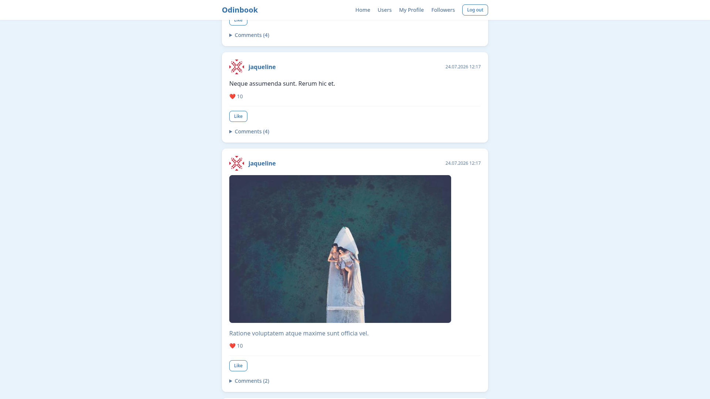

About Me
Hi! I'm a Ruby on Rails developer. Studying the intersection of language and technology, I discovered my passion for programming and my interest in building web applications.
I'm on a self-taught journey through the Rails ecosystem, building real applications — from social platforms to multi-tenant SaaS — while combining the analytical skills from linguistics with modern web development.
Background:
· 4 semesters Computational Linguistics at Eberhard Karls Universität Tübingen
· Self-taught in Ruby on Rails via The Odin Project curriculum
· Strong Linux system knowledge
· Passion for problem-solving and clean code
Skills & Technologies
Backend
- Ruby on Rails (7 & 8)
- PostgreSQL
- Devise (authentication)
- Service Objects
- Solid Queue
Frontend
- Hotwire (Turbo & Stimulus)
- Turbo Frames & Streams
- Tailwind CSS v4
- HTML5 & CSS3
Tools & DevOps
- Git & GitHub
- Kamal (deployment)
- Linux Systems
- Command Line
Projects

Kontova
A multi-tenant Rails application built with
Devise, service objects, Turbo, and Solid Queue
for background processing, deployed with Kamal
on Hetzner.
Log in with:
- demo@kontova.de or inventory@kontova.de
- demo1234
- 0000

Rails Atlas
A Rails tooling project that uses AST parsing to analyze and map out Rails codebases.

Odinbook
A social media clone built with Rails 8.1 and PostgreSQL as part of The Odin Project curriculum. Features Follow, Like, and Comment functionality with Turbo Frame integration for inline interactions, styled with Tailwind CSS v4.
Get In Touch
I'm currently looking for opportunities as a Junior Ruby on Rails Developer. Feel free to reach out!
Email: mail@bschum.de
GitHub: github.com/bosseschum